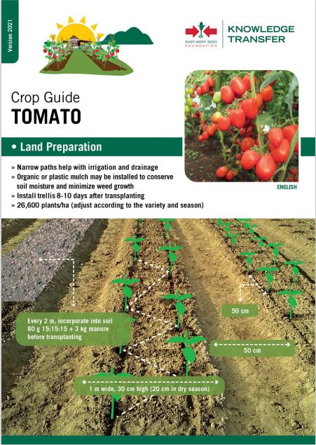
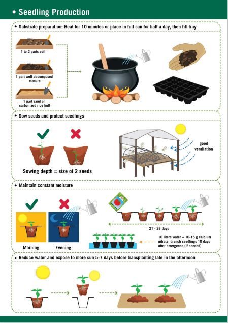
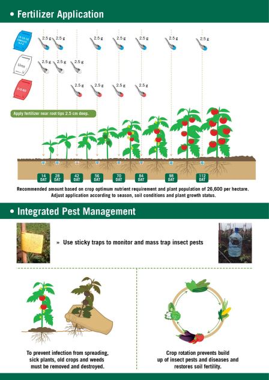
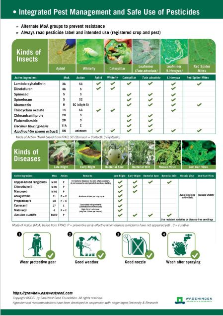
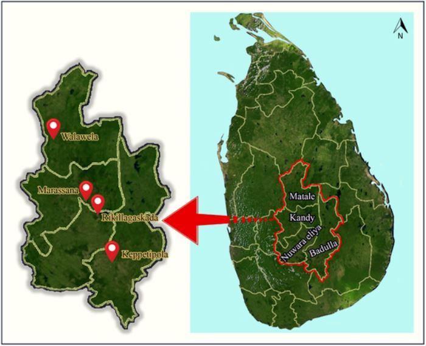
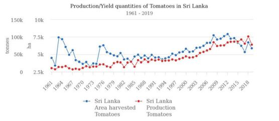
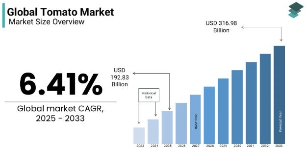
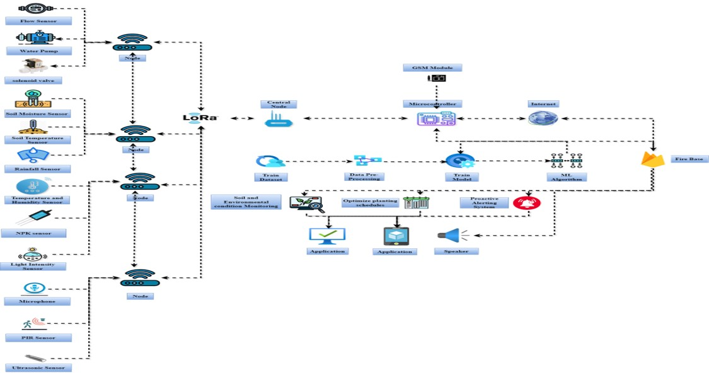
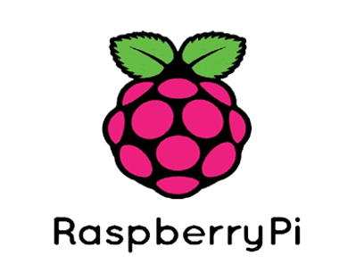

Project Scope
Introduction
AgriSense360 is an innovative precision agriculture system designed to support Sri Lankan farmers by combining traditional farming with advanced technology. It uses a distributed network of IoT sensors connected via LoRaWAN to monitor soil conditions (moisture, pH, nutrients), weather, and crop health in real time. Infrared imaging is integrated to detect early signs of crop stress and diseases without harming plants. The collected data is analyzed using machine learning models—linear regression, deep neural networks, and SVM for accurate crop yield prediction (78.34% accuracy) and disease detection in tomatoes (85% accuracy with CNN models). The system is cost-effective and flexible, making it accessible to smallholders and large agribusinesses alike. A mobile application dashboard delivers actionable insights such as soil health indices, crop water stress levels, and bacteria risk to farmers, enabling timely, data-driven decisions. AgriSense360 aims to enhance productivity, manage risks, and promote sustainable farming practices amid climate challenges and increasing food demand in Sri Lanka.




Background & Literature Survey


Figure 1. Tomato production growth in Sri Lanka within past years

Figure 2. Global Tomato Market Size
The integration of IoT-based sensor networks and machine learning has revolutionized precision agriculture, enabling farmers to optimize irrigation, monitor soil health, and predict crop yields with unprecedented accuracy. Studies by Smith et al. (2020) demonstrated that LoRa-enabled soil moisture and nutrient sensors reduce water usage by 30% while maintaining crop productivity. Kumar & Singh (2021) highlighted the scalability of LoRa networks in transmitting real-time field data across vast agricultural landscapes. However, existing systems often rely on threshold-based irrigation controls, lacking predictive analytics to anticipate weather shifts or automate corrective actions, which limits their adaptability to dynamic environmental conditions.
Recent advancements in machine learning have transformed disease detection and planting optimization. Sladojevic et al. (2016) achieved 96% accuracy in identifying tomato diseases like blight using convolutional neural networks (CNNs) on leaf images. Zhang et al. (2021) fused multi-sensor data with weather forecasts to optimize planting schedules, though their models lacked real-time integration with automated fertilization systems. Ensemble models, such as gradient boosting machines, have improved yield predictions by analyzing historical crop data and soil metrics, yet delays in disease alerts remain a barrier to proactive farm management.
Pest and bird deterrence has evolved from manual scouting to AI-driven detection. Lee & Kim (2019) utilized thermal imaging and acoustic analysis to distinguish harmful pests like aphids from beneficial species, achieving 92% detection accuracy. However, current deterrent systems often deploy generic ultrasonic signals, which pests rapidly habituate to, reducing long-term efficacy. The absence of species-specific deterrence mechanisms and real-time integration with farm management platforms limits their practicality in large-scale deployments.
The literature underscores the need for holistic solutions that unify real-time sensor data, predictive analytics, and automated controls. Platforms like Agrisense360 bridge these gaps by integrating soil health monitoring, pest detection, and yield forecasting into a single architecture. By leveraging anomaly detection algorithms and automated remediation, such systems empower farmers to transition from reactive to proactive agriculture, enhancing sustainability and resilience against climate variability.
References
- “IEEE Xplore Full-Text PDF:” Accessed: Mar. 05, 2025. [Online]. Available: https://ieeexplore.ieee.org/stamp/stamp.jsp?arnumber=10807232
- L. García, L. Parra, J. M. Jimenez, J. Lloret, and P. Lorenz, “IoT-based smart irrigation systems: An overview on the recent trends on sensors and iot systems for irrigation in precision agriculture,” Sensors (Switzerland), vol. 20, no. 4, Feb. 2020, doi: 10.3390/S20041042.
- N. Yadav, “IoT Based Smart Irrigation System Using Weather Forecasting,” International Journal of Science and Research (IJSR), vol. 13, no. 1, pp. 930–936, Jan. 2024, doi: 10.21275/SR24114035017.
- H. Zia, A. Rehman, N. R. Harris, S. Fatima, and M. Khurram, “An experimental comparison of iot‐based and traditional irrigation scheduling on a flood‐irrigated subtropical lemon farm,” Sensors, vol. 21, no. 12, Jun. 2021, doi: 10.3390/S21124175.
- A. Jabbari, T. A. Teli, F. Masoodi, F. A. Reegu, M. Uddin, and A. Albakri, “Prioritizing factors for the adoption of IoT-based smart irrigation in Saudi Arabia: a GRA/AHP approach,” Frontiers in Agronomy, vol. 6, 2024, doi: 10.3389/FAGRO.2024.1335443.
- W. Shafik, A. Tufail, A. Namoun, L. C. De Silva, and R. A. A. H. M. Apong, “A Systematic Literature Review on Plant Disease Detection: Motivations, Classification Techniques, Datasets, Challenges, and Future Trends,” IEEE Access, vol. 11, pp. 59174–59203, 2023, doi: 10.1109/ACCESS.2023.3284760.
- N. L. Mudegol, A. D. Kamble, V. M. Jadhav, and S. R. Birajdar, “Grapes Insect Detection and Monitoring using YOLOv4,” International Conference on Innovative Data Communication Technologies and Application, ICIDCA 2023 - Proceedings, pp. 545–548, 2023, doi: 10.1109/ICIDCA56705.2023.10099496.
- P. Sharma, P. Dadheech, N. Aneja, and S. Aneja, “Predicting Agriculture Yields Based on Machine Learning Using Regression and Deep Learning,” IEEE Access, vol. 11, pp. 111255–111264, 2023, doi: 10.1109/ACCESS.2023.3321861.
- “IEEE Xplore Full-Text PDF:” Accessed: Mar. 05, 2025. [Online]. Available: https://ieeexplore.ieee.org/stamp/stamp.jsp?arnumber=8883163
- “IEEE Xplore Full-Text PDF:” Accessed: Mar. 05, 2025. [Online]. Available: https://ieeexplore.ieee.org/stamp/stamp.jsp?arnumber=10535513
Research Gap
Following areas are the research gaps found in most of the recent researches.
Intelligent Crop Management
While existing research has advanced automated irrigation and real-time monitoring, most solutions remain limited to basic soil moisture measurement and simple rain-detection triggers. These systems typically generate reactive alerts only after soil conditions have already deteriorated, lack integration with disease prevention or automated fertilization, and require farmers to manually interpret data without the benefit of AI-driven recommendations for plant-specific watering or pH balancing. As a result, opportunities for proactive intervention and holistic resource management are missed.
Precision Agriculture
AgriSense360 delivers an all-in-one smart farming solution that combines real-time sensor data, thermal imaging, and AI to provide accurate yield predictions and early disease detection before visible symptoms appear. Unlike traditional systems, it offers proactive, plant-specific insights through a low-cost, LoRaWAN-powered platform designed for smallholder farmers. With integrated weather adaptation and a mobile app for real-time decisions, AgriSense360 makes precision agriculture accessible, intelligent, and reliable anywhere
Proactive Crop Management
AgriSense360 introduces a unified system that goes beyond static schedules and delayed alerts by leveraging real-time sensor data for dynamic decision-making. It uniquely correlates early soil and environmental changes with specific disease and nutrient risks, enabling timely, automated fertilization and intervention. Unlike traditional pest and bird control methods, AgriSense360 employs species-specific detection using image and sound analysis, offering proactive deterrence. The system also integrates soil health, pest activity, and environmental data into real-time crop yield forecasting bringing precision farming to smallholder farmers with unmatched scalability and speed.
Research Problem & Solution
Proposed Problem
How can farmers leverage smart technologies to improve irrigation, soil health, disease detection, pest control, and yield prediction while adapting to climate change and limited resources?
Modern agriculture faces critical challenges, including water scarcity, unpredictable weather patterns, pest infestations, and soil degradation. Traditional farming practices often lead to over-irrigation, excessive pesticide use, and reactive decision-making, resulting in resource waste, reduced yields, and environmental harm. Smallholder farmers lack access to affordable, real-time insights for optimizing planting schedules or mitigating disease outbreaks. Climate change exacerbates these issues, making it harder to predict growing conditions. Existing digital solutions are often fragmented, cost-prohibitive, or lack scalability, leaving farmers vulnerable to crop loss and financial instability. This underscores the urgent need for an integrated, intelligent system that empowers farmers with data-driven tools to enhance productivity, sustainability, and resilience.
Proposed Solution
The "Agrisense360" platform addresses agricultural challenges by integrating IoT, machine learning, and real-time analytics into a unified precision farming system. Leveraging LoRa-enabled soil moisture, pH, and flow sensors, the system automates irrigation while adapting to weather conditions, triggering "sleep mode" during rainfall to conserve water. Advanced sensors monitor soil NPK levels, temperature, and humidity, feeding data into machine learning models that optimize planting schedules and detect early signs of nutrient deficiencies or diseases. For pest management, thermal imaging and convolutional neural networks (CNNs) identify harmful insects, while sound analysis detects bird species, activating targeted deterrents like ultrasonic pulses or acoustic signals. Real-time data from field sensors is transmitted via GSM/LoRa to a centralized cloud platform, where ensemble ML models forecast crop yields and IR imaging flags disease risks. Farmers access actionable insights irrigation alerts, pest detections, and yield predictions through an intuitive mobile app, enabling timely interventions, automated fertilization, and strategic planning. By merging scalable sensor networks with adaptive AI, Agrisense360 empowers farmers to reduce waste, maximize productivity, and build climate-resilient agricultural practices.
Research Objectives
Intelligent Irrigation and Water Management Using IoT and LoRa
The first objective is to develop an intelligent irrigation system that leverages IoT sensors and LoRa wireless technology to enable real-time monitoring and remote management of water resources. By integrating flow sensors, soil moisture sensors, and automated pumps, the system aims to optimize irrigation schedules, minimize water wastage, and empower farmers to efficiently manage water usage from anywhere, thereby promoting sustainable agricultural practices
Integrated Planting Schedule Optimization, Environmental Deviation Detection, and Disease Prevention
The second objective is to design a holistic platform that optimizes planting schedules, detects early environmental deviations, and prevents crop diseases through real-time soil and environmental analytics. Advanced sensors continuously monitor soil NPK levels, moisture, temperature, humidity, and light intensity, feeding data into machine learning models. These models analyze trends to recommend ideal planting windows tailored to current conditions, ensuring crops align with optimal growing cycles. Simultaneously, the system identifies subtle environmental deviations such as irregular soil nutrients or abnormal humidity that could signal nutrient deficiencies or disease risks. By correlating deviations with disease patterns, the platform triggers proactive alerts with remediation steps (e.g., precision fertilization or soil treatment) and automates corrective actions. This integrated approach transforms reactive farming into proactive crop management, enhancing productivity while safeguarding long-term soil health and sustainability.
Insect and Bird Detection with Automated Deterrence
The third objective focuses on safeguarding crops by detecting harmful insects and birds through a combination of thermal imaging and sound analysis. The system is designed to accurately identify species-specific threats and deploy targeted deterrent mechanisms, such as acoustic signals, to protect tomato crops. Real-time data is transmitted via GSM and LoRa to a centralized database, with insights and alerts delivered to farmers through a dedicated mobile application.
Crop Yield Prediction and Disease Detection Using IoT Machine Learning.
AgriSense360 combines IoT, infrared imaging, and machine learning to revolutionize crop yield prediction and disease detection. Real-time sensor nodes collect environmental and soil data (temperature, humidity, pH, NPK, moisture), while IR imaging captures early signs of ten common tomato diseases. This data is transmitted via LoRaWAN to a central system, where predictive models like Linear Regression, DNN, and SVM forecast crop yield with up to 78.34% accuracy. A mobile app delivers timely alerts and actionable insights, empowering farmers to prevent disease spread, manage resources efficiently, and improve productivity ensuring smarter, data-driven farming decisions.
Methodology

Figure 3. High Level Architecture of the System.
The proposed intelligent agriculture system is structured around four main components;
- Smart Irrigation and Water Management.
- Soil and Environmental Condition Monitoring with Planting Schedule Optimization.
- Insect and Bird Detection and Deterrence via Sound and Image Analysis
- Crop Yield Predictions and Crop Disease Detection.
Our integrated smart farming system combines IoT technology and machine learning to enhance agricultural efficiency through real-time monitoring and automated decision-making. Sensor networks continuously track key parameters such as soil moisture, temperature, humidity, rainfall, NPK levels, and light intensity. This data is transmitted via LoRa to a central node, enabling automated irrigation control using pumps and solenoid valves based on real-time field conditions. Machine learning models analyze both historical and live data to optimize planting schedules, ensuring timely cultivation and efficient use of resources.
In addition to smart irrigation and planting optimization, the system provides advanced crop protection and forecasting features. Pest and bird detection is achieved through PIR sensors, microphones, ultrasonic sensors, and image processing, triggering audio-based deterrents when threats are detected. The platform also delivers early crop disease detection and accurate yield predictions using models like DNN, SVM, and linear regression. Farmers receive instant alerts, recommendations, and trend reports via a mobile or web application enabling proactive intervention, reducing losses, and promoting sustainable, high-yield farming practices.
Technologies Used

Python

Raspberry Pi
Tensorflow

Keras
Arduino IDE
Firebase
LoRaWAN

Android Studio

VS Code

Google Colab
Nodemcu
Yolo
Milestones
Timeline in Brief
-
August 2024
Project Proposal
A Project Proposal is presented to potential sponsors or clients to receive funding or get your project approved.
Marks Allocated : 6
-
December 2024
Progress Presentation I
Progress Presentation I reviews the 50% completetion status of the project. This reveals any gaps or inconsistencies in the design/requirements.
Marks Allocated : 6
-
February 2025
Research Paper
Describes what you contribute to existing knowledge, giving due recognition to all work that you referred in making new knowledge
Marks Allocated : 10
-
March 2025
Progress Presentation II
Progress Presentation II reviews the 90% completetion status demonstration of the project. Along with a Poster presesntation which describes the project as a whole.
Marks Allocated : 18
-
June 2025
Logbook
Status of the project is validated through the Logbook. This also includes, Status documents 1 & 2.
Marks Allocated : 3
-
April 2025
Final Report
Final Report evalutes the completed project done throughout the year. Marks mentioned below includes marks for Individual & group reports and also Final report.
Marks Allocated : 19
-
May 2025
Final Presentation & Viva
Viva is held individually to assess each members contribution to the project.
Marks Allocated : 20
-
May 2025
Website Assessment
The Website helps to promote our research project and reveals all details related to the project.
Marks Allocated : 2
Downloads
Documents
Please find all documents related to this project below.
Topic Assessment
Submitted on 2024/07/17
- GroupDownload
Project Charter
Submitted on 2024/05/24
- GroupDownload
Project Proposal
Submitted on 2024/08/16
- IndividualDownload
Status Documents I
Submitted on 2024/12/08
- IndividualDownload
Status Documents II
Submitted on 2024/03/26
- GroupDownload
Research Paper
Submitted on 2025/03/20
- GroupDownload
Poster
Submitted on 2023/09/04
- GroupDownload
Presentations
Please find all presentations related this project below.
Commercialization
About Us
Meet Our Team !
Get in Touch
Contact Details
Discover more tools and support at: appinfo.AgriSense360@gmail.com
Thank you for choosing AgriSense360. We trust our services have contributed positively to your mental wellness journey.
– Team AgriSense360 –